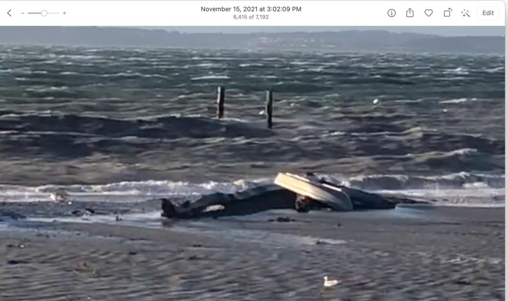
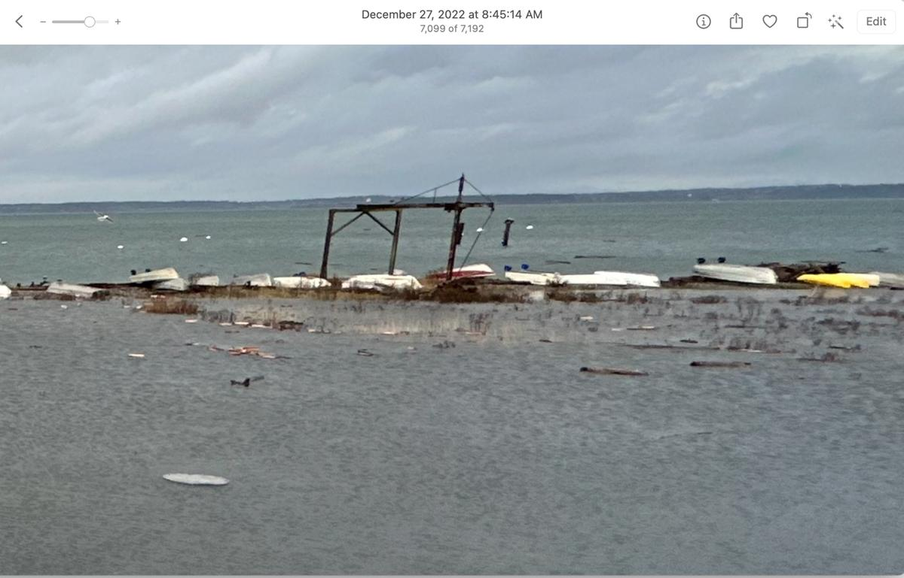

These are VERY rough estimates and should not be used to reduce your concern for your safety or property.
This is for informational purposes only. Do not make decisions based on this data.
Madrona Beach, Camano Island, Washington
Forecast at Madrona Beach, observations from Ault Field.
Actual high tide
Last updated
This page checks for the morning update every few minutes.
Astronomical tide plus rough allowances for air pressure, westerly wind, and the Skagit River. A high tide is flagged at 14.0 ft.
0 in2 mph from SSE (160°), gusts 2 mph. Westerly part 0 mph. NWS forecast at Madrona Beach (SEW 124,98)
Skagit River
0 in9.84 ft · MVEW1 forecast
Piling steps
about 8.3 of 10 steps showing
The mark on each bar is the 14.0 ft flood flag. The photographed floods were about 15.0 ft.
Right now
Observations from Ault Field (KNUW) at Oct 30, 6:53 AM: sea-level pressure 1013.0 mb, wind calm. Closest official station, about 11 miles from the beach.
Skagit at Mount Vernon 11.17 ft, 7,710 cfs at Oct 30, 7:45 AM. Flood stage is 28 ft.
The NWS forecast grid for Madrona Beach did not include pressure. Sea-level pressure is the Open-Meteo forecast at 279 Alder St, Camano Island, WA 98282. A high tide within two hours of the latest Ault Field (KNUW) observation uses that observed sea-level pressure instead. NWS forecast at Madrona Beach (SEW 124,98). River forecast is National Water Prediction Service MVEW1. Tides outside that forecast use the current USGS reading.
Predicted and observed
The pilings have 10 steps about a foot apart. The lowest step is about a 10 ft tide, so 9 steps showing is about 11 ft and 5 steps showing is about 15 ft. Photograph the steps at a high tide and add a row to observations.csv.
Observed
Steps
Height
Predicted actual
Predicted − observed
Monday, November 15 · 3:02 PM PST
—
—
14.80 ftHindcast from NOAA, Ault Field (KNUW), and USGS for that hour.
—
Tuesday, December 27 · 8:45 AM PST
—
—
14.68 ftHindcast from NOAA, Ault Field (KNUW), and USGS for that hour.
—
Add a reading on GitHub. Use Pacific time, for example 2026-10-21T15:10:00-07:00. You can leave the height blank and enter only the steps still showing. Then run the “Daily forecast” workflow, or wait for the next morning, and the comparison will include it. Past forecasts are kept in data/history.csv.
The two photographed floods
Both photos were read by the owner as 5 of 10 steps showing. On the piling scale in the write-up, that is 15.0 ft. A negative difference means the formula came in low. These two days are the only floods the formula was built from, so a close result is a check that the arithmetic matches the notes, not proof that the next storm will match.
November 15, 2021
The photo is time-stamped 3:02 PM. The owner's spreadsheet records 5 steps still showing and an actual height of 15 ft, 3.50 ft above the tide value in that sheet. The write-up says the westerly wind pushed water over the berm where the boats are kept.

Reference photo from the owner's notes. The spreadsheet reads this as 5 steps showing, 15.00 ft.
Using the numbers in the owner's spreadsheet
Tide 11.50 ft, pressure 997.63 mb (29.46 inHg), wind W 48 gust 60, Skagit 33.93 ft.
Tide 11.50 ft
Pressure +6.1 in (997.6 mb)
Wind +19.2 in (48 mph westerly, from W)
Skagit +16.7 in (gauge 33.93 ft)
Estimate 15.00 ft
Photographed height 15.00 ft. Estimate minus photographed height: +0.00 ft.
Using data retrieved for that hour
NOAA high at Nov 15, 2:31 PM was 11.70 ft. Ault Field (KNUW) at Nov 15, 2:56 PM: sea-level pressure 1005.0 mb, wind 45 mph from W (260°). USGS gauge 33.66 ft, about 101,000 cfs.
Tide 11.70 ft
Pressure +3.2 in (1005.0 mb)
Wind +17.7 in (44 mph westerly, from W)
Skagit +16.4 in (gauge 33.66 ft)
Estimate 14.80 ft
Photographed height 15.00 ft. Estimate minus photographed height: −0.20 ft.
December 27, 2022
The photo is time-stamped 8:45 AM. The owner's spreadsheet records 5 steps still showing and an actual height of 15 ft, 2.10 ft above the tide value in that sheet. The write-up says the Skagit was sending about 54,000 cubic feet of water into the bay every second.

Reference photo from the owner's notes. The spreadsheet reads this as 5 steps showing, 15.00 ft.
Photographed height 15.00 ft. Estimate minus photographed height: −0.43 ft.
Using data retrieved for that hour
NOAA high at Dec 27, 8:56 AM was 13.03 ft. Ault Field (KNUW) at Dec 27, 8:53 AM: sea-level pressure 978.0 mb, wind 26 mph from SE (140°). USGS gauge 24.95 ft, about 52,200 cfs.
Tide 13.03 ft
Pressure +13.9 in (978.0 mb)
Wind 0 in (0 mph westerly, from SE)
Skagit +5.9 in (gauge 24.95 ft)
Estimate 14.68 ft
Photographed height 15.00 ft. Estimate minus photographed height: −0.32 ft.
How the estimate is made
The working hypothesis, with the numbers currently in config.json:
Start with the NOAA predicted high tide at station 9447929 (Coupeville, Penn Cove, Whidbey Island), datum MLLW, in feet.
Pressure. Add 0.3937 inches of water for every millibar that sea-level pressure is below 1013.21 mb, and subtract the same amount when pressure is higher.
Westerly wind. Add 4.0 inches for every 10 mph of the westerly component in the forecast at Madrona Beach (279 Alder St, Camano Island, WA 98282). Direction is where the wind comes from. Due west counts in full. Southwest or northwest counts only the part that is from the west. South, east, and southeast count as zero and are not subtracted. Sustained wind is used. Gusts are shown and not added. The forecast wind is the National Weather Service grid for that address. If that grid has no wind, the hourly forecast at the same point is used. If that is also empty, the Ault Field grid is used and the page says so.
Skagit River. Add 1.2 inches for every foot the Mount Vernon gauge is above 20 ft. At or below 20 ft the river term is zero. Flood stage on that gauge is 28 ft. A future high tide uses the National Water Prediction Service forecast for MVEW1 when it covers that time, and the current USGS reading otherwise.
Both photographed floods left 5 of 10 piling steps showing, which the owner's scale reads as 15.0 ft. Likely flooding is flagged at 14.0 ft, one foot below that photographed height, because the water was already over the berm in those photos and this formula is only a rough fit.
Change the coefficients in config.json and run the daily workflow again. The page and the flood comparison both use that file.
Open-Meteo sea-level pressure at Madrona Beach, used when the NWS grid does not publish pressure. If that request fails, the same forecast at the Ault Field coordinates is used and labeled.